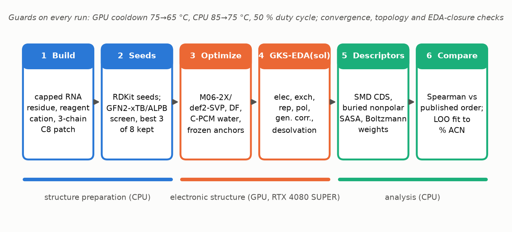
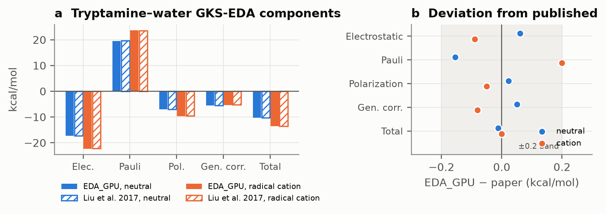
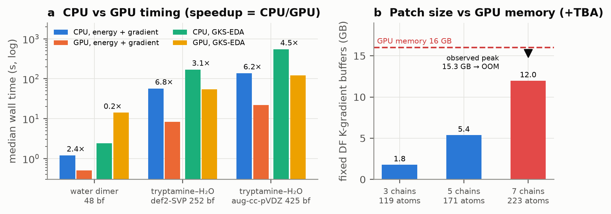
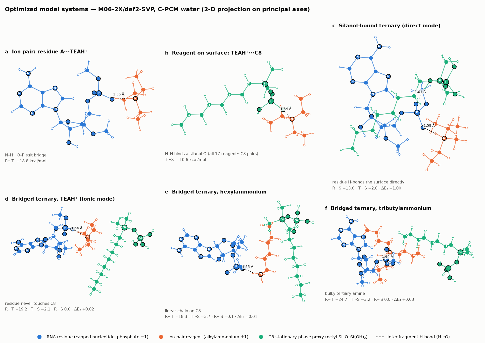
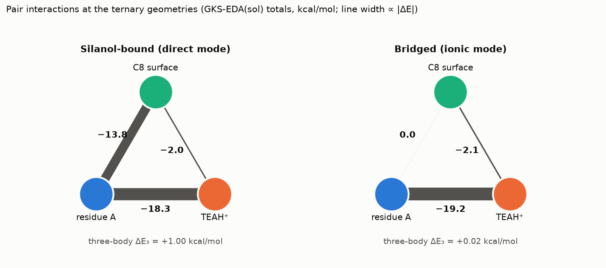
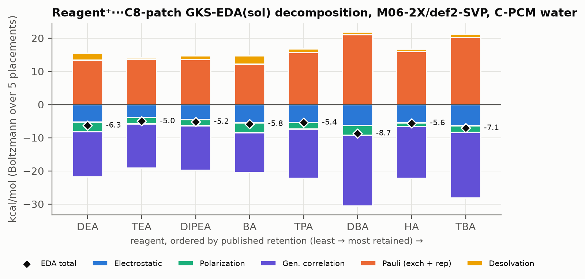
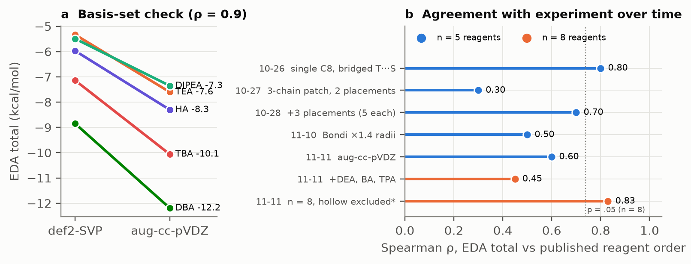
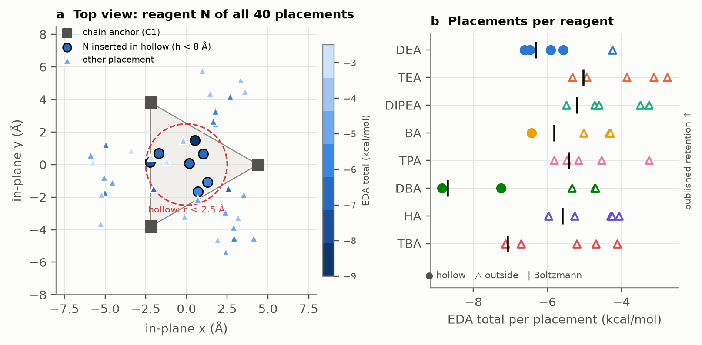
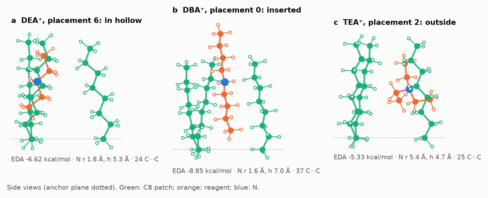
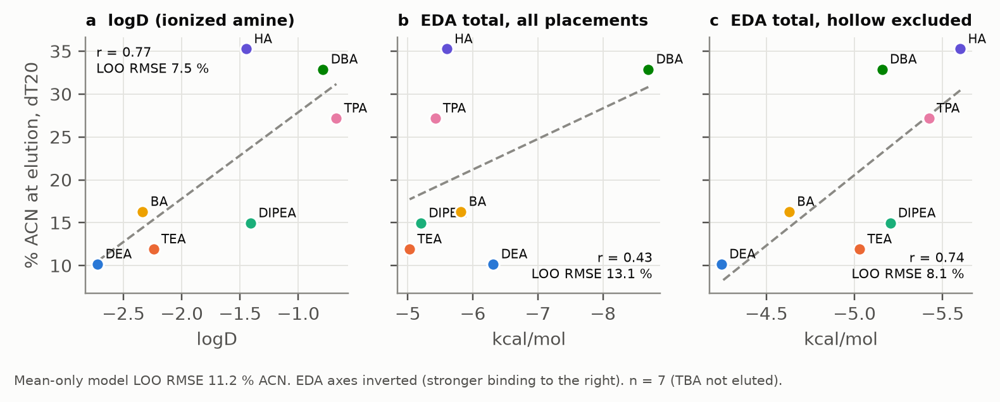

Abstract. EDA_GPU is a PySCF/GPU4PySCF implementation of the generalized Kohn–Sham energy decomposition analysis (GKS-EDA) with an experimental implicit-solvent extension, GKS-EDA(sol). The aim is to explain, at the level of interaction-energy components, how alkylammonium ion-pair reagents and RNA nucleobases control retention in IP-RP HPLC. The method layer is validated: energies and gradients agree with Psi4 to the quadrature level (21/21 checks), and gas-phase EDA reproduces the published tryptamine–water benchmark to ≤ 0.20 kcal/mol per component in both charge states. On the application side, 40 reagent placements (8 reagents × 5) on a silanol-free three-chain C8 patch were optimized at M06-2X/def2-SVP in C-PCM water and decomposed. Binding is dispersion-dominated (generalized correlation −12 to −21 kcal/mol), and the reagent ranking is numerically robust: it does not change with the basis set (aug-cc-pVDZ, ρ = 0.9) or the cavity radii and dielectric. However, agreement with the published retention order falls from ρ = 0.7 (n = 5) to ρ = 0.45 (n = 8, not significant), and no EDA descriptor predicts % acetonitrile at elution better than the reagents' logD (LOO RMSE 7.5 vs 8.1–13.1 % ACN). The main failure has been traced to the model surface: small reagents (DEA⁺, BA⁺) sink into the open central hollow of the three-chain patch. Larger brushes that would close this hollow exceed the 16 GB GPU memory. The base order (measured T > A > G > C) is not reproduced either. This report summarizes the methods, data and figures, and lists the open issues and the decisions that are needed.
Keywords: GKS-EDA, GPU4PySCF, implicit solvation, IP-RP HPLC, oligonucleotides, alkylammonium reagents, C8 stationary phase
In ion-pair reversed-phase chromatography of oligonucleotides, a lipophilic alkylammonium cation pairs with the phosphodiester backbone and adsorbs on the alkyl-bonded phase. Retention and selectivity depend strongly on the reagent: Donegan, Nguyen and Gilar (2022) rank 13 alkylamines by the % acetonitrile needed to elute dT20/dT60, and Maurer et al. (2025) find the same order for 200–6000 nt RNA on a silanol-free polymeric column. The project asks whether an energy decomposition can explain these trends, and which terms (electrostatics, Pauli repulsion, polarization, dispersion-like generalized correlation, desolvation) drive them. Three aims were set:

Electronic structure uses PySCF 2.14.0 (CPU) and GPU4PySCF 1.8.1 (GPU), with geomeTRIC 1.1.1 for optimization and GFN2-xTB/ALPB for seed refinement. All runs used an AMD Ryzen 9 5950X (16 cores), an NVIDIA RTX 4080 SUPER (16 GB) and 30 GB of usable RAM under Ubuntu 26.04. Every production run has thermal guards (GPU cooldown 75 → 65 °C, CPU 85 → 75 °C) and 50 % workload pacing. Settings, versions, hardware and timings are written to each result JSON.
The total interaction energy is split as ΔE = ΔEele + ΔEex + ΔErep + ΔEpol +
ΔEgc (+ ΔEdisp, zero for the functionals used). It uses the Su–Li orbital intermediates on KS
orbitals with ghost-basis (counterpoise) fragment references. In GKS-EDA(sol) every reference SCF carries a C-PCM (or
IEF-PCM) reaction field. The gas-phase-form terms are evaluated at the SCRF densities, and a desolvation term
ΔGdesol collects the change in electrostatic solvation energy. Two conventions in the solvent extension (the
monomer cavity and the treatment of the reaction field in the intermediates) are documented interpretations, pending the
original derivation (docs/GKS_EDA_SOL_SPEC.md). For three-body analysis,
ΔE3 = ΔE((RT)|S) − ΔE(T|S) − ΔE(R|S).
The protocol applied to every HPLC case is summarized in Figure 1.
For each reagent we report the lowest-energy, most strongly bound and 298 K Boltzmann-weighted (C-PCM electronic energy)
values over its placements. The SMD CDS (cavitation–dispersion–solvent-structure) term and the buried nonpolar SASA are added
as non-electrostatic descriptors. Rankings are compared with the published order by Spearman ρ. The retention fit
(scripts/fit_patch_retention.py) regresses % ACN at elution (Donegan Table 4, 100 mM acetate, n = 7; TBA did not
elute) on single descriptors. It reports leave-one-out (LOO) RMSE and uses a 2000-shuffle permutation test that repeats the
whole descriptor search.
Table 1. Validation evidence for the method layer.
| Check | Scope | Result | Status |
|---|---|---|---|
| CPU vs GPU, energies/gradients | water, water dimer (B3LYP/def2-SVP) | ΔE ≤ 9.2e-12 Eh; ΔG ≤ 7.4e-7 Eh/bohr | pass |
| Independent program (Psi4 1.11) | HF, B3LYP, PBE0, M06-2X; RKS/UKS; exact and DF; up to 425 bf | 21/21 within preset tolerances (HF 3e-13 Eh) | pass |
| Published GKS-EDA benchmark | tryptamine–water, neutral and radical cation, M06-2X/aug-cc-pVDZ | totals ≤ 0.012, components ≤ 0.20 kcal/mol (Fig. 2) | accepted 10-19 |
| CPU vs GPU, full EDA | water and CO2 dimers; tryptamine–water | max component difference 1.8e-8 Eh | pass |
| GKS-EDA(sol) internal | vacuum limit, dielectric screening, CPU/GPU, PCM gradients | 1.6e-9 Eh; ratio 0.988 vs 0.987; ≤ 9.6e-9 Eh; 3.8e-6 Eh/bohr | pass |
| GKS-EDA(sol) external | XEDA II BH3–NH3 C-PCM example | differences up to 12 mEh; depends on unknown cavity radii | unresolved |
| Matched-settings XEDA run | 5 cases, inputs prepared | not run (deferred by decision 10-19) | deferred |

From about 250 basis functions the GPU is 3–7× faster than 16 CPU threads (Fig. 3a). For tiny systems the GPU EDA is slower because fixed per-SCF overheads dominate. A three-chain patch case (101–119 atoms) takes 0.4–2.5 h to optimize and 4–7 min per def2-SVP EDA, or 43–78 min with aug-cc-pVDZ (peak 7.8 GB GPU). The limiting resource is GPU memory in the density-fitted gradient. GPU4PySCF's K-gradient keeps two fixed Cartesian-basis buffers (j3coo + dmoo) that grow steeply with system size (Fig. 3b). A 7-chain brush + TBA (223 atoms) converged the SCF (13.7 min) but ran out of memory in the first gradient at 15.3 GB, even after a fix that releases CuPy's cached memory pool before each gradient. A CPU estimate of the PCM matrices also exhausted host RAM (26 GB). Following the user's decision of 9 Nov, the three-chain patch is the production surface.

Ion pairs, residue/reagent adsorption on the single C8 proxy, silanol-bound ternaries and bridged ternaries were computed first (Fig. 4, Table 2). The ion-pair energy per phosphate barely depends on the base (−18.8 to −20.0 kcal/mol for TEAH⁺), consistent with charge-counting, length-based separation in the ionic mode. In bridged complexes the residue never touches the ligand (R···S ≈ 0) and the energies are pairwise additive (|ΔE3| ≤ 0.3). Silanol-bound ternaries show a small anti-cooperative three-body term (+1.0 to +1.2). One finding redirected the work: every isolated reagent···C8 pair optimized into an N–H···silanol hydrogen bond (1.75–2.04 Å), which gives most of the −10.6 to −12.7 kcal/mol; chain-only contact gives just −2 to −4. Because Maurer's column has no silanols but shows the same reagent order, the silanol-free patch was introduced.

Table 2. Pair and three-body GKS-EDA(sol) totals at the ternary geometries (kcal/mol; R residue A, T reagent, S C8 proxy).
| Arrangement / reagent | R···T | T···S | R···S | ΔE3 |
|---|---|---|---|---|
| Silanol-bound (direct), TEAH⁺, bases A/C/G/U | −17.7 to −19.0 | −0.3 to −2.1 | −13.8 to −16.7 | +0.97 to +1.19 |
| Bridged (ionic), TEAH⁺ | −19.2 | −2.1 | 0.0 | +0.02 |
| Bridged, DIPEA-H⁺ | −20.0 | −2.6 | −1.0 | −0.30 |
| Bridged, dibutylammonium | −23.4 | −2.4 | 0.0 | +0.01 |
| Bridged, hexylammonium | −18.3 | −3.7 | −0.1 | +0.01 |
| Bridged, tributylammonium | −24.7 | −3.2 | 0.0 | +0.03 |
Residue···C8 direct contact: C −18.9, G −15.4, A −14.9, U −14.9 kcal/mol, polar H-bonds to the silanol. This is the inverse of the measured T > A > G > C retention order. Adding SMD CDS changes no rank (−0.7 to −1.0 kcal/mol on chain contact, 4–6 cal mol−1 Å−2 vs ≈ 25 from alkane transfer).

Without a silanol, all 40 placements bind through chain contact. The decomposition (Fig. 6, Table 3) is dominated by generalized correlation (−12 to −21 kcal/mol, dispersion-like), opposed by Pauli repulsion (+12 to +21). Electrostatics (−3.9 to −6.4) and polarization (−1.1 to −3.0) are small, and desolvation is mildly repulsive. TEA⁺ is the weakest binder, and DBA⁺ and TBA⁺ the strongest, as expected. The EDA total, however, places the least-retained reagent, DEA⁺, third.

Table 3. Reagent descriptors on the patch (Boltzmann over 5 placements, kcal/mol; np in Å2) and published data.
| Reagent | EDA total | EDA + CDS | elec | Pauli | pol | gen. corr. | desolv | buried np | hollow / 5 | EDA, hollow excl. | % ACN dT20 | logD |
|---|---|---|---|---|---|---|---|---|---|---|---|---|
| DEA⁺ | −6.32 | −8.76 | −5.36 | 13.34 | −2.85 | −13.54 | 2.11 | 330 | 4 | −4.25 | 10.2 | −2.72 |
| TEA⁺ | −5.03 | −6.98 | −3.92 | 13.75 | −1.93 | −13.32 | 0.39 | 266 | 0 | −5.03 | 11.9 | −2.24 |
| DIPEA-H⁺ | −5.20 | −6.84 | −4.52 | 13.59 | −1.85 | −13.50 | 1.08 | 319 | 0 | −5.20 | 15.0 | −1.41 |
| BA⁺ | −5.82 | −7.98 | −5.55 | 12.20 | −2.99 | −11.98 | 2.49 | 247 | 1 | −4.63 | 16.3 | −2.34 |
| TPA⁺ | −5.42 | −7.44 | −5.43 | 15.69 | −1.98 | −14.83 | 1.13 | 327 | 0 | −5.42 | 27.2 | −0.67 |
| DBA⁺ | −8.70 | −11.71 | −6.27 | 21.02 | −2.96 | −21.36 | 0.87 | 401 | 2 | −5.16 | 32.9 | −0.79 |
| HA⁺ | −5.60 | −7.55 | −5.50 | 16.00 | −1.10 | −15.62 | 0.62 | 297 | 0 | −5.60 | 35.3 | −1.45 |
| TBA⁺ | −7.08 | −9.63 | −6.44 | 20.22 | −1.93 | −19.83 | 0.90 | 432 | 0 | −7.08 | n.e. | 0.66 |
Rows ordered by published retention (Donegan 2022 Table 4, 100 mM acetate). Shaded rows have placements in the patch hollow (N lateral r < 2.5 Å and height h < 8 Å). n.e. = not eluted (most retained). Spearman ρ vs published order (n = 8): EDA total 0.45 (p 0.26), EDA + CDS 0.43, buried np 0.38–0.52, electrostatic 0.71–0.83, generalized correlation 0.71–0.81. The component p-values (0.01–0.05) are not corrected for the 20 metric/aggregate combinations tested.
Single points at aug-cc-pVDZ (lowest-energy placement of the original five reagents) bind every pair 1.9–3.3 kcal/mol more strongly, almost entirely through generalized correlation, and leave the order unchanged (ρ(SVP, aDZ) = 0.9; only TEA/DIPEA swap, 0.25 kcal/mol apart; Fig. 7a). Larger cavities (Bondi × 1.4) shift binding by −0.57 ± 0.32 kcal/mol with placement order preserved (ρ = 0.96 over 25 pairs). The acetonitrile dielectric changes totals by < 0.03 kcal/mol, because C-PCM scales as (ε−1)/ε. The disagreement with experiment is therefore not a basis-set or continuum-parameter artefact.

Mapping the reagent nitrogen of all 40 optimized placements onto the anchor plane (Fig. 8a) shows that the strongest binders sit inside the chain triangle. Four of five DEA⁺ placements, the best BA⁺ placement and two DBA⁺ placements insert into the central hollow (r 1.2–1.8 Å, h < 8 Å; Fig. 9a). They gain contact with all three chains at once, while the bulky TEA⁺ and DIPEA-H⁺ cannot enter (Fig. 9c). In a real, densely grafted C8/C18 phase such a cavity does not exist. The small reagents are thus over-bound by an artefact of the model, and the per-reagent result depends on which placements were sampled (Fig. 8b).


Fitting % ACN at elution of dT20 (n = 7) gives the results in Fig. 10 and Table 4. The reagents' logD alone gives LOO RMSE 7.5 % ACN (r = 0.77; mean-only model 11.2). The EDA total over all placements does worse than the mean (13.1). Removing the hollow placements brings it close to logD (8.1, r = 0.74), but not past it. In the permutation test, a shuffled target produces an equally good best single descriptor a third of the time (pselect = 0.33). The only two-term model that beats logD (logD + off-centre polarization, LOO 3.7) rests on HA⁺ alone and has no physical reading; it is treated as spurious. dT60 gives the same picture (logD 9.0 vs mean 14.7).

Table 4. Single-descriptor fits to % ACN (dT20, n = 7).
| Descriptor | Pearson r | LOO RMSE (% ACN) | Spearman ρ (n 7) | ρ with TBA (n 8) |
|---|---|---|---|---|
| mean only (reference) | — | 11.2 | — | — |
| logD (baseline) | 0.77 | 7.5 | 0.61 | 0.74 |
| EDA total, Boltzmann, hollow excluded | 0.74 | 8.1 | 0.75 | 0.83 |
| EDA + CDS, Boltzmann, hollow excluded | 0.75 | 8.1 | 0.82 | 0.88 |
| electrostatic, Boltzmann, all placements | 0.65 | 9.0 | 0.71 | 0.81 |
| EDA total, Boltzmann, all placements | 0.43 | 13.1 | 0.25 | 0.45 |
Taken together, the numerics are sound (convergence, basis and solvent tests), and the weak point is the surface model. EDA on the 3-chain patch mostly measures reagent size and hydrophobicity, which logD already captures. The question that remains is whether a surface without an artificial cavity lets the dispersion and electrostatic components explain the logD residuals (HA⁺ up, DIPEA-H⁺ down).
Table 5. Status of the work packages.
| Work package | Dates | Outcome | Status |
|---|---|---|---|
| CPU/GPU optimizer, constraints, result schema, CI | 10-11 | 9 scientific checks, 46 tests pass | done |
| Gas-phase GKS-EDA (6 terms, RKS/UKS) | 10-11 – 10-19 | published benchmark ≤ 0.20 kcal/mol | validated |
| Psi4 cross-check; CPU/GPU scaling | 10-18 | 21/21 pass; GPU 3–7× from ~250 bf | done |
| GKS-EDA(sol) C-PCM/IEF-PCM | 10-18 | internal checks pass; no external reference | experimental |
| Ion pairs, residue/reagent on silanol C8 (stages 7.1–7.2) | 10-19 | base-independent pairing; polar C8 contacts | done |
| Silanol-bound and bridged ternaries, three-body EDA | 10-20 – 10-22 | ΔE3 +1.0 vs ≈ 0; two adsorption modes | done |
| Reagent series on silanol C8; SMD CDS term | 10-21 – 10-26 | N–H···silanol artefact; CDS too weak | done |
| Silanol-free 3-chain patch, 5 reagents × 5 placements | 10-27 – 10-28 | chain-contact binding; ρ 0.7 (n 5) | done |
| Larger brush (5/7 chains) | 10-28 – 11-09 | GPU OOM in DF gradient even after cache fix | blocked |
| Solvent sensitivity (radii, ε) — step 1 | 11-10 | order robust | done |
| aug-cc-pVDZ basis check — step 2 | 11-11 | order robust, ρ 0.9 | done |
| DEA⁺, BA⁺, TPA⁺ on patch — step 3 | 11-11 | ρ falls to 0.45; hollow artefact found | done |
| Retention fit — step 5 | 11-11 | no EDA descriptor beats logD | done |
| Bases A/C/G/U on the patch — step 4 | — | 20 cases, ~1–2 days | not started |
| Commit of 11-11 archives, fit script, docs | — | files in working tree, not committed | pending |
Table 6. Issues, ranked by how much they limit the scientific conclusions.
| # | Issue | Evidence | Options (recommended first) |
|---|---|---|---|
| 1 | Open central hollow in the 3-chain patch over-binds small reagents | DEA⁺ 4/5 placements in hollow, 3rd strongest; total ρ 0.45; fit 13.1 → 8.1 % ACN without hollow | (0) Minutes-long check: do the chains splay apart in the inserted placements? (a) If yes, restrain/freeze the outer chain carbons (no extra atoms) and rerun the 7 inserted placements (DEA 4, BA 1, DBA 2; ~10 h). (b) A 4th chain/stub: full octane ≈ 145 atoms exceeds the size limit. (c) Re-sample off-centre only (r ≥ 2.5 Å; 10–15 h; post hoc). |
| 2 | GPU memory blocks larger, more realistic brushes | 7-chain + TBA: 15.3 GB peak, OOM in DF K-gradient; host RAM 25.7/32 GB | xTB (or frozen-patch) geometries with a DFT EDA single point only (EDA fits: aug-cc-pVDZ EDA peaked at 7.8 GB); a memory-batched K-gradient in GPU4PySCF; or periodic/QM-MM surface models on other hardware. User decision (11-09): 3-chain only. |
| 3 | No hydrophobic term in the solvent model | C-PCM has none; SMD CDS 4–8 vs ≈ 25 cal mol−1 Å−2; acetonitrile ε changes < 0.03 kcal/mol | Report buried nonpolar SASA × literature γ as a bracketed term; consider explicit-solvent free-energy sampling (MD) for the hydrophobic part, with EDA kept for the enthalpic components. |
| 4 | Base order not reproduced | Silanol C8: C > G ≈ A ≈ U vs measured T > A > G > C | Step 4: bases A/C/G/U on the silanol-free patch (20 cases, 1–2 days), after deciding on issue 1. |
| 5 | Statistics: small n, multiple comparisons | n = 7–8; 20 descriptor combinations; pselect 0.33 | Pre-register the descriptor before new runs; add Maurer 2025 reagents (BA/TPA mixtures) as a second data set. |
| 6 | GKS-EDA(sol) not externally validated | XEDA II BH3–NH3: up to 12 mEh; radius-sensitive | Matched XEDA run (kit ready) if access becomes available; meanwhile report cavity-radius sensitivity (done for the patch). |
| 7 | Sampling: constrained stationary points, 5 placements, no Hessians | placement spread (up to 4 kcal/mol) ≥ reagent spread; xTB picks the DFT best in 2/5 | More placements per reagent only after issue 1. No vibrational/entropy terms at this size. |
| 8 | Housekeeping | 11-11 archives, fit_patch_retention.py, Donegan CSV, README/VALIDATION edits uncommitted; 7-chain files deliberately uncommitted |
Commit and push on approval; keep or discard the 7-chain builder and c8x7_patch.*. |
Before step 4, choose how to handle the hollow: (1a) restrain the outer chains and rerun the inserted placements (recommended, ~10 h, after the quick splay check); (2) re-sample off-centre only; or (3) accept the current patch and move directly to bases A/C/G/U. Also confirm whether to commit and push the 11-11 work.
All values in this report come from archived files: reports/psi4_crosscheck*_2026-10-18/,
reports/tryptamine_*_gpu_*, reports/benchmark_scaling_2026-10-18.json, reports/hplc_ionpair_2026-10-19/,
hplc_surface_2026-10-19/, hplc_ternary_2026-10-20/, hplc_reagents_2026-10-21/,
hplc_bridged_2026-10-22/, hplc_nonpolar_2026-10-26/, hplc_patch_2026-10-27/,
hplc_patch_sampling_2026-10-28/, hplc_patch_sensitivity_2026-11-10/, hplc_patch_augdz_2026-11-11/,
hplc_patch_extended_2026-11-11/ (cases.json, ranking8.json), hplc_retention_fit_2026-11-11/
(fit.json) and c8x7_memtest_2026-11-09/. Retention data: examples/hplc/donegan2022_table4.csv.
Figures 1–3 and 6–10 were generated for this report from those files; Figures 4–5 are from scripts/plot_hplc_figures.py.
Placement geometries (Figs. 8–9) are the archived optimized.xyz files.